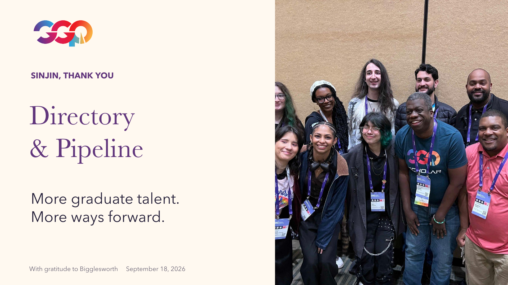

WITH GRATITUDE TO SINJIN, CLAIRE, LUCAS & BIGGLESWORTH
Help more donors
help more people.
Directory + Pipeline: turn trusted relationships into useful support for graduate students.
5industry mentors proposed
for the first Pipeline pilot
10graduate students proposed
for the first Pipeline pilot
1,000graduate Directory users
proposed by September 2027
A working prototype and a proposed first test. Graduate-focused ambitions, donor tools and a quarterly roadmap. Future counts are targets, not results.
THE CONVERSATION
Directory & Pipeline

Read this slide as text
SINJIN, THANK YOU
Directory
& Pipeline
More graduate talent.
More ways forward.
With gratitude to Bigglesworth September 18, 2026
A NOTE TO DARBY
What would you
like to shape?
An introduction. A question. A better way to reach a graduate student. Your thoughts help us make this useful.
Your draft stays in this browser until you choose to send it. The buttons open an email addressed to Darby.